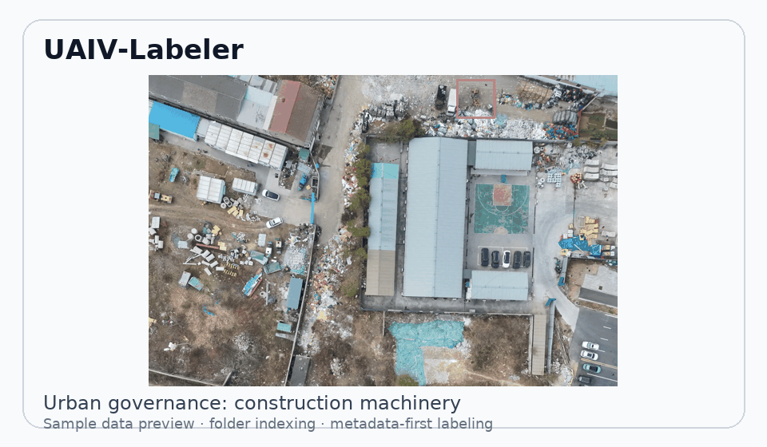
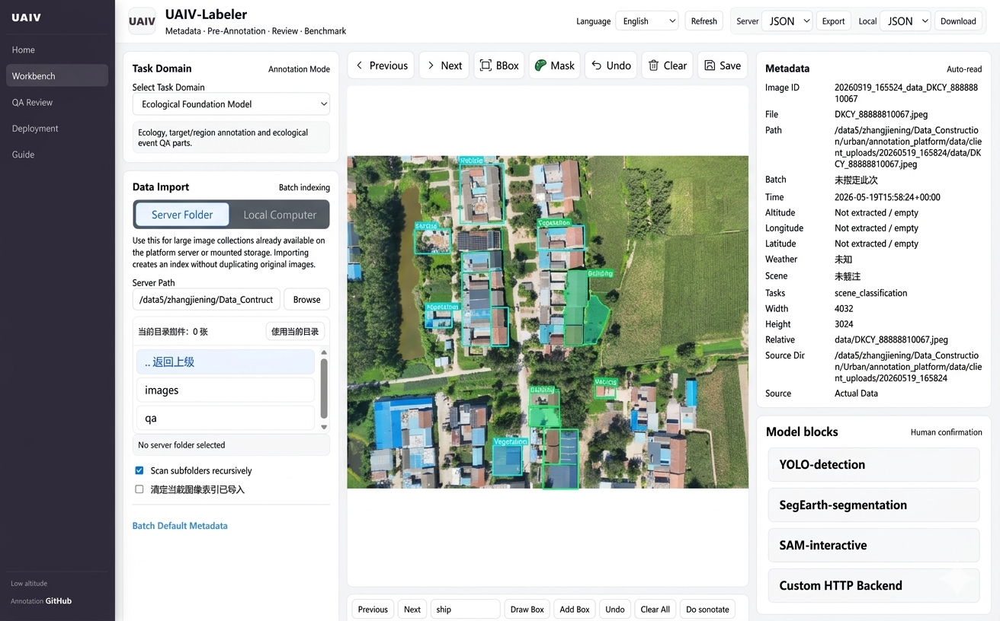
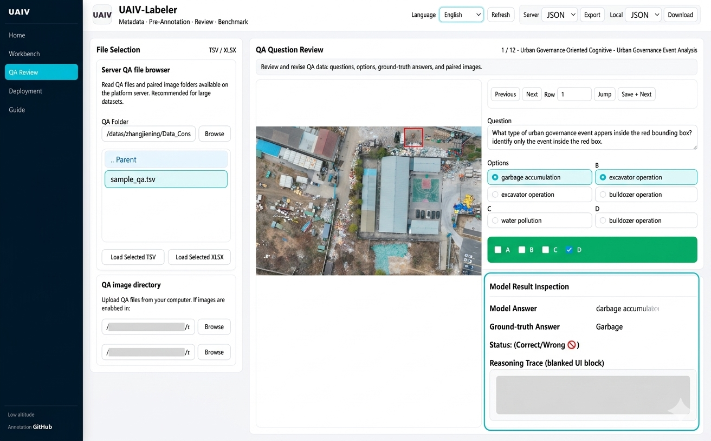
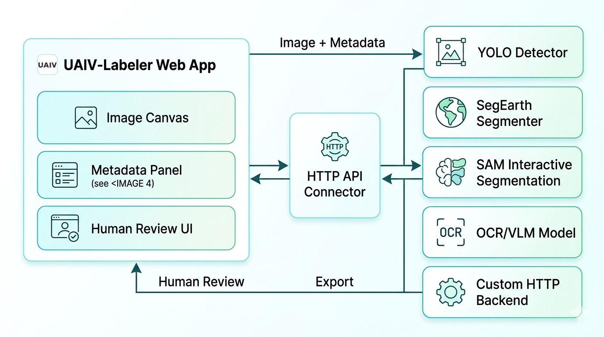

Open-source data engine for aerial observation datasets
UAIV-Labeler
Build low-altitude remote-sensing datasets beyond boxes. UAIV-Labeler combines detection, oriented boxes, polygons, event QA, OCR/VLM review, metadata indexing, model pre-annotation, and benchmark export in one open-source workflow.
50+
metadata fields for flight, scene, task, and review context
8+
export formats for training and benchmark
10+
annotation and multimodal review task types
git clone https://github.com/JennyZhang0810/UAIV-Labeler.git
cd UAIV-Labeler
pip install -r requirements.txt
bash offline_demo/run_offline.sh
Import drone-collected imagery, run pre-annotation, revise boxes or regions, review QA, then export benchmark-ready files.
Supported Tasks
UAIV-Labeler is built for multi-task aerial observation data construction, not only object detection.
Why UAIV-Labeler?
CVAT and Label Studio are excellent general tools. UAIV-Labeler focuses on low-altitude remote-sensing dataset production where metadata, event QA, model-assisted review, and benchmark export are native parts of the same workflow.
| Capability | CVAT | Label Studio | UAIV-Labeler |
|---|---|---|---|
| Aerial metadata workflow | Limited | Limited | Native |
| Oriented bounding boxes | Native | Partial | Native |
| Event QA review | External | External | Native |
| Benchmark export | Partial | Partial | Native |
| Multi-task remote-sensing workflow | External | External | Native |
From import to review to export, without leaving the workspace.
Designed for labs building low-altitude imagery datasets for urban governance, ecology, agriculture, restoration, and multimodal foundation-model benchmarks.
M
Metadata-first
Batch, altitude, GPS, weather, scene, source, and task metadata stay visible during annotation and export.
AI
Model-assisted
Connect YOLO, SegEarth, SAM-style services, OCR, VLMs, or custom HTTP backends for pre-annotation.
QA
QA review
Review TSV QA files, XLSX model results, paired images, ground truth answers, and reasoning traces.
EX
Benchmark export
Export JSON, COCO, VOC, YOLO, YOLO-OBB, DOTA, GeoJSON, Mask PNG, and QA JSONL.
One workbench for annotation, model review, and QA.
Annotators can switch between boxes, oriented boxes, polygons, and QA review. Dataset builders can organize image sources, model backends, metadata, and export formats without gluing multiple tools together.
Server-folder import indexes large image collections without copying original data.
Readable JSON remains the source of truth, with SQLite side indexes for filtering and status summaries.
Sample data is bundled, so a new user can clone the repository and run a local demo immediately.



Dataset Production Flow
A complete loop from raw imagery and metadata to model assistance, human review, quality control, benchmark export, and dataset release assets.
Example Projects
UAIV-Labeler is aimed at real remote-sensing use cases, where a dataset may combine object detection, event labels, QA, OCR, and restoration evidence.
Architecture
A lightweight platform stack: browser workbench, annotation engine, pluggable model services, and export tools for benchmark construction.
Image canvas, metadata panel, geometry tools, QA review, task filters, and export controls.
Readable JSON store, rebuildable SQLite index, status summaries, and quality-control reports.
YOLO, SegEarth, SAM-style prompts, OCR/VLM services, and custom HTTP prediction APIs.
COCO, VOC, YOLO, YOLO-OBB, DOTA, GeoJSON, masks, QA JSONL, and Dataset Card assets.
Publications
Reserved for upcoming dataset papers, benchmark reports, and system descriptions connected to the UAIV ecosystem.
UAIV dataset release paper
Low-altitude multimodal dataset documentation, benchmark protocol, and data release assets.
UAIV-Labeler system overview
Metadata-first, model-assisted annotation workflow for aerial observation data construction.
Run locally, preview online, or deploy on a lab server.
Local trial with bundled sample_data. Useful for students, demos, and air-gapped previews.
Quickly inspect the hosted interface and workflow before deploying your own data.
Run on a lab server or mounted dataset disk, with local GPU or remote model services.
Quick start
Python 3.10+
git clone https://github.com/JennyZhang0810/UAIV-Labeler.git
cd UAIV-Labeler
pip install -r requirements.txt
bash offline_demo/run_offline.sh
# Open locally
http://127.0.0.1:7860Roadmap
The current release already covers core review and export workflows. Next milestones focus on stronger segmentation, larger imagery, collaboration, and dataset release operations.
先用 GitHub Pages 上线，域名通过后再绑定。
This page is organized for GitHub Pages from the docs directory. When the official domain is ready, bind it through GitHub Pages Custom domain.